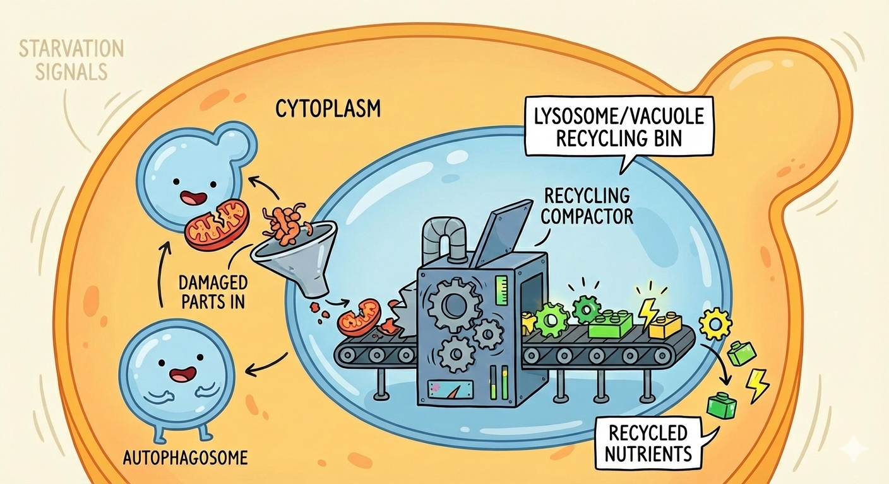

When Cells Eat Themselves (And Why That’s Actually Genius)

Here’s a wild thought: your cells are cannibals. Not in a horror movie way, but in a “I need to survive, so I’m going to eat myself” kind of way. And before you get grossed out, this self-eating process is literally keeping you alive right now.
The fancy word for this is autophagy (auto = self, phagy = eating). And the story of how scientists figured this out? It involves starving yeast, hunting for mutants, and a lot of patience with microscopes.
Today’s paper: “Isolation and characterization of autophagy-defective mutants of yeast” (1993)
Or as I like to call it: The Cannibalism Paper! 🍽️
A Quick History Lesson
The word “autophagy” wasn’t invented for this paper. It was actually coined way back by Christian de Duve, the 1974 Nobel Prize winner. He noticed that cells sometimes digest their own parts, and he named this self-eating process as autophagy.
But here’s the thing: knowing something exists and understanding how it works are two very different things. That’s where this 1993 paper comes in.
The Setup: Why Study Yeast?
You might be wondering, “Why yeast? I’m a human, not bread!” Fair question. Here’s the genius part: autophagy in yeast works pretty much the same way as autophagy in mammals. Yeast are just way easier to study, and not only autophagy but various other cellular processes too.
Think of yeast as the lab rats of the cellular world, except smaller, cheaper, and you don’t need ethics approval.
The Cellular Recycling System
Before we dive in, let’s get the basics down. Inside your cells, there’s this whole network of organelles working together called the lysosomal endomembrane system. It includes:
- Endoplasmic Reticulum (ER) → the protein factory
- Golgi apparatus → the packaging center
- Lysosomes → the recycling bins (in yeast, these are called vacuoles)
When cells are starving or stressed, they need to recycle their own components to survive. That’s where autophagy kicks in. The cell wraps up bits of itself in a special membrane bubble called an autophagosome, which then fuses with a lysosome to form an auto-phago-lysosome. Inside this acidic environment, everything gets broken down and recycled.
In yeast, you can actually see this happening (another reason to choose yeast)! They form these structures called Autophagic Bodies (ABs) inside their vacuoles. And that’s what makes yeast so perfect for this research, you can literally watch the process under a microscope.
The Hunt for Broken Mutants
Here’s where it gets fun. The scientists asked themselves: “What if we find yeast that can’t do autophagy? That would tell us which genes are essential for the process!”
So they went mutant hunting.
The Experimental Design:
- Starve the yeast (nitrogen starvation, specifically) to trigger autophagy
- Add PMSF (a chemical that stops the vacuole from breaking down the ABs) so they pile up and become visible
- Look under a microscope for yeast that DON’T form ABs
- Those are your mutants!
They found 15 different strains (named apg1 through apg15) that couldn’t form autophagic bodies. Each one had a single recessive mutation in a different gene. Fifteen genes! That’s how complex this system is.
The Brilliant Microscopy Trick
To see the ABs clearly, they used a dye called quinacrine. The inside of the vacuole is acidic (just like lysosomes in our cells), and quinacrine loves acidic environments. So it lights up the vacuoles, making the ABs inside them super easy to spot.
In the wild-type yeast after starvation, the vacuoles would be packed with these glowing ABs. In the apg mutants? Nothing. Not even after 24 hours.
The Takeaway: Your Cells Are Smarter Than You Think
What makes this paper so important is that it proved autophagy isn’t just a random process. It’s a tightly controlled genetic program involving at least 15 different genes working together.
When you skip meals, when you exercise, when you sleep; your cells are constantly making decisions about what to keep and what to recycle. Autophagy is how they clean house, remove damaged parts, and survive when nutrients are scarce.
This 1993 paper laid the groundwork for decades of research. The scientist who later won the Nobel Prize for autophagy research (Yoshinori Ohsumi, 2016) built directly on this foundation, identifying many more autophagy genes and showing how the process works in detail.
Sometimes the most important discoveries come from asking: “What breaks when we break this?”
Want to discuss this paper? Have questions? Reach out!
📧 Email: devansh.shah@iitb.ac.in
Feel free to share your thoughts, corrections, or follow-up questions. We’d love to hear from you!
References
- Tsukada, M., & Ohsumi, Y. (1993). Isolation and characterization of autophagy-defective mutants of Saccharomyces cerevisiae. FEBS Letters, 333(1-2), 169-174.
- Christian de Duve - Nobel Prize 1974: https://www.nobelprize.org/prizes/medicine/1974/duve/biographical/
- Yoshinori Ohsumi - Nobel Prize 2016: https://www.nobelprize.org/prizes/medicine/2016/summary/
- AI-generated image. (Gemini)